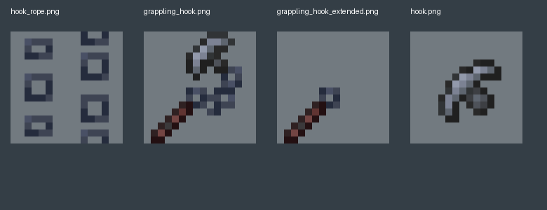

作者CurseForge源码链接指向FloffyToffyToolBox/Toffys_Hooks；固定1.20.1-fabric分支92b160f。实际版本2.2.2、Fabric loader0.16.14、API0.92.6、Yarn build10、Java17。
只有源归档及本地hash，无独立Git树blob核对；不等于Forge直接兼容，也没运行构建。固定源研究1项，接受新增0；不是新生物、不是1000参考完成。未改生产资源、未启动Java/游戏。
参考图作者FloffyToffy，研究用途。10倍最近邻PNG检查；不是游戏截图。

作者CurseForge源码链接指向FloffyToffyToolBox/Toffys_Hooks；固定1.20.1-fabric分支92b160f。实际版本2.2.2、Fabric loader0.16.14、API0.92.6、Yarn build10、Java17。
只有源归档及本地hash，无独立Git树blob核对；不等于Forge直接兼容，也没运行构建。注册grappling_hook为HookItem，hook_entity为0.25×0.25 MISC实体；disableSaving/disableSummon，trackingRange4、trackingInterval5。HookClawItem实际为FEET攀墙装备。
攀墙靴与钩头素材不是两套独立飞爪机制；实体跟踪范围参数不能直接当飞行半径。使用按玩家单一hook引用分支：已有钩则discard并清引用；没有则服务端扣1耐久并生成，冷却3；再次使用没有回飞过程。
生成返回值未检查，耐久先扣；不同事件/网络时序下实际表现未运行，不声称不存在失败消耗。钩从玩家眼高沿视线1.5速度发出；tick先super、检查主人/持有/范围，再原生collision、onCollision、位置设为hitResult位置。canHit恒false，不抓实体。
选中源码没有重力/空气拖曳或攻击伤害实现；原版基线辅助定位，不冒充Fabric合并运行验证。MAX_RANGE2048与squaredDistanceTo比较，因此欧氏距离上限约45.2548格，而不是2048格；主人移除/死亡/不再持有任一grapple或已挂方块变空气时删除。
只检查isAir不是原挂面或碰撞形状；未看见年龄超时；无需持同一ItemStack，不能声称唯一栈绑定。命中方块保存BlockPos、速度清零并设IN_BLOCK；LENGTH=max(初始眼到钩距离×0.5−3,1.5)。玩家运动客户端注入只在超过LENGTH时加向钩速度。
加速度为0.075/g×位移（Y再×1.1），不是刚性绳长约束、不是服务器已校验的牵引；未宣称能替代Dynasty服务端判定。setOwner调用父类并把自己写入玩家引用；remove和onRemoved都清引用。发包data用主人ID（无主人时自身ID），接包先父类onSpawnPacket再无主人kill。
原生客户端按packet data查实体后调用虚方法setOwner，所以不是完全无主人同步；主人尚未跟踪时当前子类会kill而无重试。实际包顺序未运行。自定义NBT只写in_block与length，既不super也不写attachedBlockPos；但注册明确disableSaving，所以不能把理论手动NBT缺口说成正常世界重载必现故障。
研究限制为存档恢复不可直接借用；没有执行保存、重登或跨维度，canUsePortals返回false。手持属性先按栈引用识别main/offhand，再按玩家hook非空选extended；不是检查当前钩属于这个具体栈，也不检查IN_BLOCK。
activeItem为HookItem时bl2被置false；HookItem本身不设置持续使用，不凭此推断所有双持状态。钩头真正渲染的是ModItems.HOOK物品，GROUND矩阵；hook.json在handheld父模型基础上指定ground旋转135/90/0及scale0.5。
getTexture返回块图集不等于直接使用一张实体UV；原生generated/handheld父消费者此前B17已读，不算新参考。绳索由8个顶点构成两张交叉双面cutout贴片，半径0.1，长度k=手到钩距离+0.1；V从−1到2.5k−1，U各用半张hook_rope。
没有实体链节几何，也不是四面绳管；长度方向重复密度与yyon每段V0..1不同。光照传入i，白色乘色，无附加发光层。手端位置区别第三人称身体朝向偏移与第一人称相机投影/FOV/挥手；mainhand不是此item时翻转到另一侧。
跟随当前握持而非发射时hand快照；两手都持同类时仍偏主手。degree旋转显式×57.295776，与之前yyon弧度问题不能混为同一bug。实际4张16²PNG已按10倍最近邻查看：冷灰钩刃、暗红柄分材质；extended仅剩柄部，钩头单独49个不透明像素；rope用68个不透明像素形成错列链环。
源图仅研究，未复制到生产；只看PNG与绑定，未渲染游戏持物或把二维图伪称游戏截图。此实现直接是方块锚定的单钩移动工具；相对yyon双钩控制器、Hookshot/Tidal回收等案例具备可比较链，但它不提供抓实体、拖拽物品、回飞攻击或完整恢复。
最多1项待审flying_claw邻近机制研究；全局语义与独立验收未完成，新增接受0，生物模型+贴图参考0。